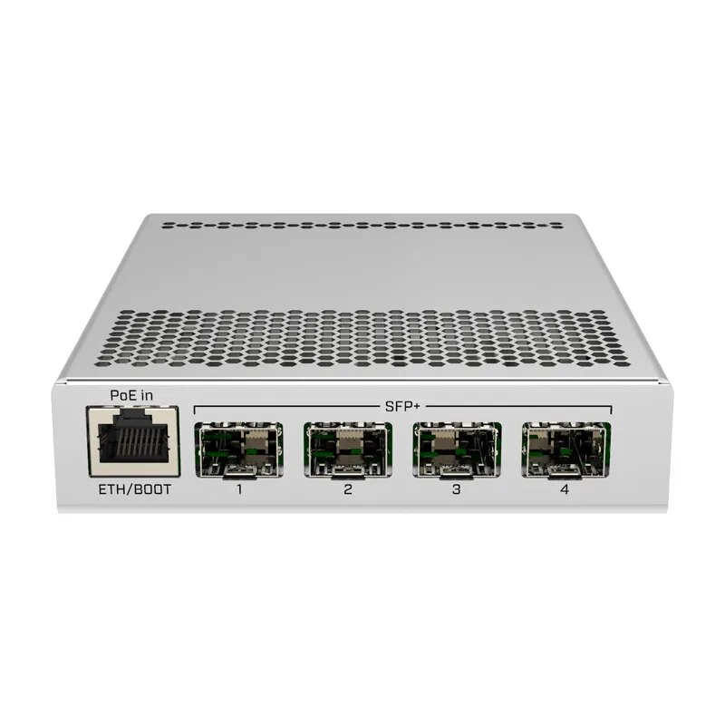

Apa itu Mikrotik?

Cloud Router Switch (CRS)
CRS adalah perangkat inovatif dari Mikrotik yang menggabungkan fungsi router dan switch dalam satu perangkat. Fungsi ini berguna untuk organisasi atau bisnis yang membutuhkan solusi jaringan terintegrasi.
CRS memungkinkan manajemen jaringan yang lebih sederhana dengan mengurangi jumlah perangkat yang perlu dikelola. Selain itu, CRS juga tersedia dalam berbagai varian yang menawarkan jumlah port dan fitur keamanan berbeda, sehingga pengguna dapat memilih model yang paling sesuai dengan kebutuhan mereka.